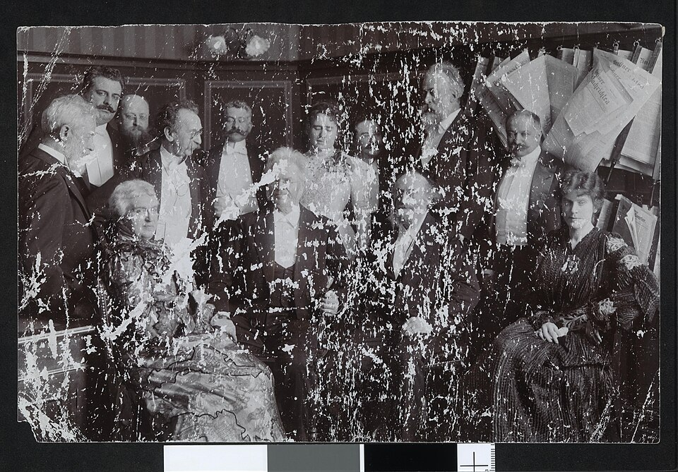
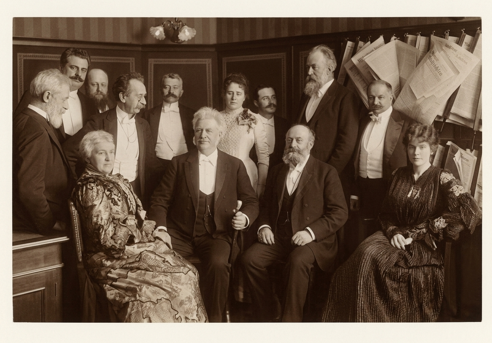

A step-by-step guide to restoring damaged, faded, or low-resolution photos with Gemini, the same model behind the viral "Nano Banana" trend.
What it can do: remove scratches, dust, and fading; sharpen detail; increase resolution; and colorize black-and-white photos. It cannot recover detail that is completely destroyed, only make a plausible reconstruction of it (see Part 03).
Part 01 · Restore a photo
From damaged to shareable
This is a real test we ran for this guide: a public-domain 1888-1889 photograph, badly damaged by scratches and emulsion loss, restored end to end with the exact steps and prompt below.

Before

After
Source photo: a public-domain group photograph, "Gruppebilde med blant annet Bjørnstjerne Bjørnson, sterkt skadet" (unknown date, late 1800s), National Library of Norway, via Wikimedia Commons. Restoration run by ARKIV AI using the Gemini image API for this guide.
01Go to Gemini and sign in
Open gemini.google.com (or the Gemini app) and sign in. You must be 18 or older to edit images; under-18 accounts can only generate new images, not edit uploaded ones.
02Upload your photo
Start a new chat and use the attach button to upload the photo you want to restore. You can also open Sidebar > Library, pick an image, and click Chat beneath it.
03Use this prompt
Paste the prompt below, then click Submit.
Restore this old, faded, low-resolution family photograph. Remove scratches, dust, noise and fading. Sharpen and increase detail and resolution. Keep every face, pose, and object exactly as they are; do not invent or change any person, clothing, or background element. Photorealistic result, not a painting or illustration.
04Review and re-run if needed
If the first result over-smooths a face or misses a damaged area, reply and ask Gemini to try again, or to focus on a specific part of the photo.
05Download it
Hover over the finished image and click Download full size.
Heads up: every image Gemini generates or edits carries a small visible watermark plus Google's invisible SynthID marker, so restored photos are still labeled as AI-processed.
Part 02 · Get better results
Colorizing, and getting a more accurate result
For black-and-white photos, add a colorizing request to the same prompt:
Also colorize this photo with natural, period-accurate tones. If I tell you the real colors of anything in the photo, use those exactly instead of guessing.
If you know a real detail Gemini can't see from a damaged or black-and-white photo, e.g. "the dress was navy blue" or "the car was maroon", say so directly in the chat. Gemini will use it instead of guessing.
Part 03 · Before you rely on it
What this can and can't actually prove
Restoration vs. reconstruction. For fading, scratches, dust, and noise, Gemini is recovering detail that's genuinely still in the photo. For an area that's completely destroyed or obscured, like the faces under heavy damage in the example above, Gemini is generating a plausible result, not proof of what was actually there. Treat a fully reconstructed face or object as a creative best-guess, never as forensic evidence of the original.
✓You must be signed in and 18 or older to edit an uploaded image; 13+ can generate new images only.
✓Don't upload a photo of someone else without asking them first, per Google's own Terms of Service on copyright and privacy.
✓Use your own discretion before you rely on, publish, or share what Gemini produces.
✓For a photo with real historical or monetary value, this is a fun first pass, not a substitute for a professional archival restorer.
The before/after demo above is an original restoration ARKIV AI ran for this guide, not a Google marketing image. The prompts are written by ARKIV AI and are not official Google prompts.